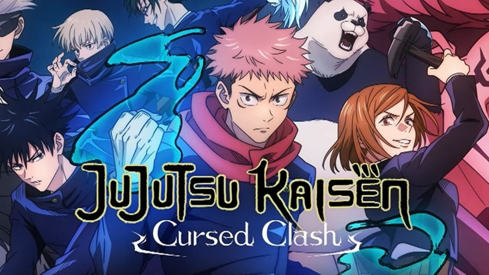

Fullmetal Alchemist

Fullmetal Alchemist é um mangá shōnen escrito e ilustrado por Hiromu Arakawa. Foi serializado
na revista mensal japonesa Monthly Shōnen Gangan entre agosto de 2001 e junho de 2010, com
os seus 108 capítulos individuais compilados em 27 volumes em formato tankōbon e publicados
pela editora Square Enix.
Rick e Morty
FRick and Morty (em português Rick e Morty) é uma série de animação adulta norte-americana de
comédia e ficção científica criada por Justin Roiland e Dan Harmon para o bloco de
programação noturno Adult Swim, exibido no canal Cartoon Network.
Cowboy Bebop
Cowboy Bebop (カウボーイビバップ Kaubōi Bibappu?) é uma aclamada série japonesa, de gênero space
western. Produzida e dirigida por Shinichiro Watanabe, a série se passa no ano de 2071 e é
centrada na vida de uma tripulação de caçadores de recompensas espaciais. O anime aborda
questões não resolvidas do passado dos protagonistas, explorando temas como existencialismo,
tédio, degradação ambiental e a solidão.[1][2]
Hora de Aventura
Finn vive grandes aventuras na terra de Ooo na companhia de seu melhor amigo, Jake. De
viagens a reinos alucinantes a lutas contra vampiros, os dois estão prontos para enfrentar
qualquer perigo.
Invencível
O pai de Mark Grayson é o super-herói mais poderoso do planeta, Omni-Man. Assim, como ele, o
jovem desperta seus poderes e, junto a uma série de outros campeões, tenta honrar o legado
de seu pai. Mas Omni-Man esconde um segredo sinistro.
Jujutsu Kaisen

Jujutsu Kaisen é um mangá japonês escrito e ilustrado por Gege Akutami, serializado na Weekly
Shōnen Jump desde 5 de março de 2018. Os capítulos individuais são compilados em volume
tankōbon, e publicados pela Shueisha desde julho de 2018. A série é licenciada e publicada
no Brasil pela editora Panini.